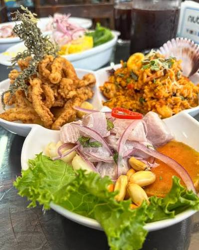
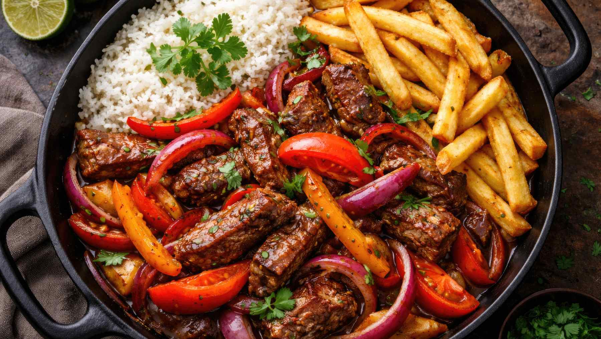
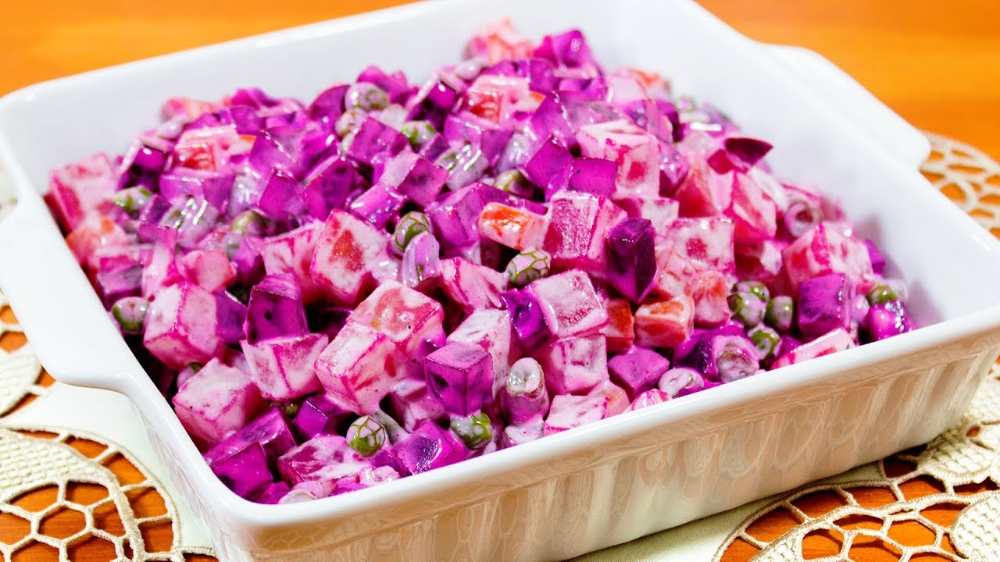

Comida Marina

Comida Marina
Plato frío a base de pescado o marisco crudo cortado en trozos pequeños, marinado en jugo de limón (u otros cítricos) y acompañado de ingredientes frescos y picantes
Ver recetaComida criolla

Lomo saltado peruano
Plato típico y bandera de la gastronomía del Perú que consiste en un salteado de tiras de carne de res, cebolla roja, tomate y ají amarillo, cocinado a fuego muy alto en un wok con salsa de soya (sillao) y vinagre.
Ver recetaEnsaladas

Ensalada rusa
La ensalada rusa peruana es una variante colorida y fresca de la ensaladilla tradicional, muy popular en la gastronomía de Perú como acompañamiento de platos principales como el pollo al horno, el arroz con pollo o el pavo navideño.
Ver receta